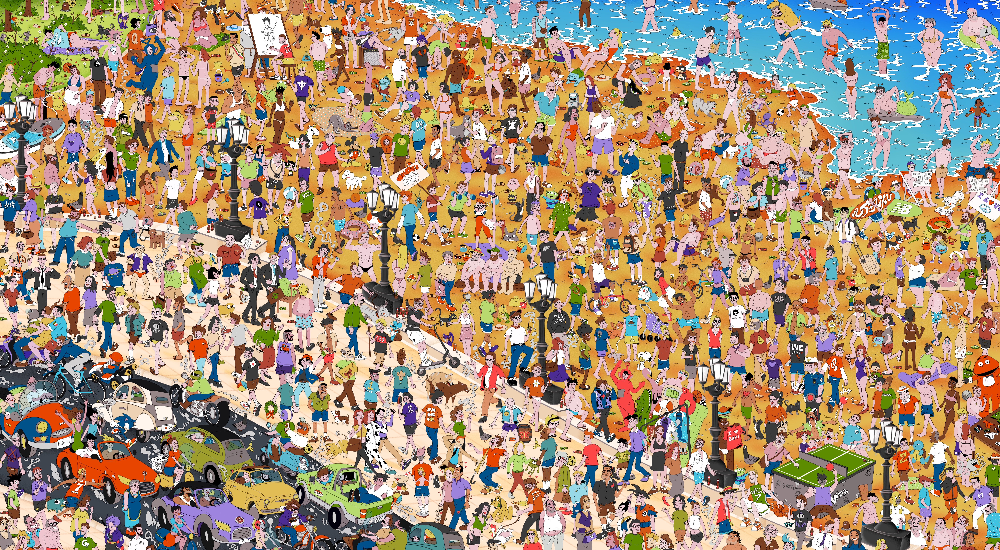

Disegno identità che restano impresse.
Illustratore, graphic & motion designer con base a Bari. Lavoro su identità visive, editoria e progetti d'arte per studi, etichette indipendenti e piccoli brand.
Scopri i miei lavori e lasciati ispirare
*
Hai un progetto in mente? Parliamone
*
Hai bisogno di una nuova identità? Sono qui per aiutarti
*
Scopri i miei lavori e lasciati ispirare
*
Hai un progetto in mente? Parliamone
*
Hai bisogno di una nuova identità? Sono qui per aiutarti
*


NABA · Progetto di tesi
Where's Kud Zamb?
Un gioco di ricerca ambientato a Bari: trova Nicola, ragazzo sbruffone dal cuore tenero, e la sua famiglia in un poster interattivo ricco di dettagli. Illustrazione, animazione e merchandising per raccontare l'ironia di una città.

Scopri il progettoPremi & Pubblicazioni
- 2024Riconoscimento — Biblioteca NABATesi selezionata per Catalogo Library NABA
- 2024Esposizione — Comune di BariOpera esposta a "Pane e Pomodoro Beach"
- 2024Rassegna Stampa — TelebariPubblicazione a cura di Sara Di Leo
- 2025Pubblicazione Editoriale — Grafica MagazineProgetto pubblicato nel terzo volume di Grafica Magazine — sold out
- 2025Borsa di Studio — Città di BariVincitore per le miglior tesi sulla città di Bari A.A. 2024/2025 — Premiazione a cura del Sindaco di Bari Vito Leccese
- 2026Esposizione — Torino Graphic Days®Opera selezionata per l’XI edizione Graphic Days®
- 2026Finalista — Premio NeologiaOpera finalista Premio Neologia Farm Cultural Park - Torino Graphic Days®
Chi sono
Sono un ragazzo riflessivo e ironico; mi piace stare in compagnia, pertanto prediligo l’efficace lavoro di squadra per confrontarmi al meglio con gli altri e scoprire cose sempre nuove.
Nel mio tempo libero coltivo diverse passioni , tra cui il disegno, la fotografia analogica e la musica, in particolare suonando la tastiera e l’ukulele.
Scarica il CV- EditoriaLibri, riviste, cataloghi
- AdvertisingCampagne pubblicitarie, affissioni, ADS
- BrandingIdentità visiva, loghi, sistemi grafici
- PackagingPackaging, etichette, confezioni
- Social & DigitalPED, contenuti social, banner
- Motion DesignAnimazione, video editing, motion graphics
- Web DesignSiti web
- Software


Disponibile per nuovi progetti